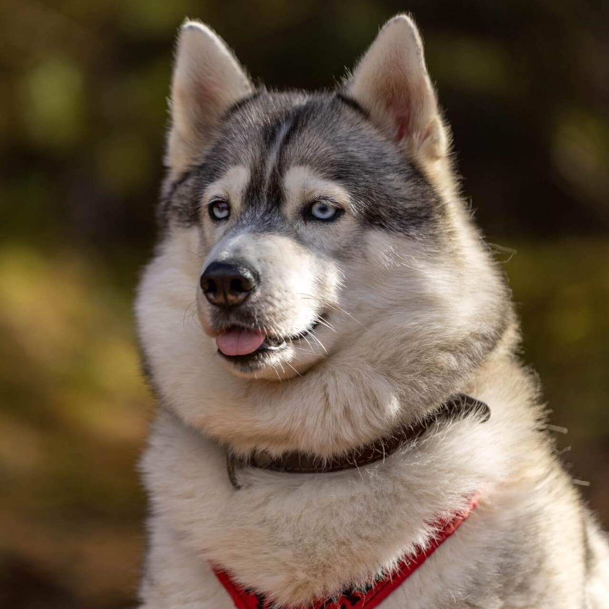
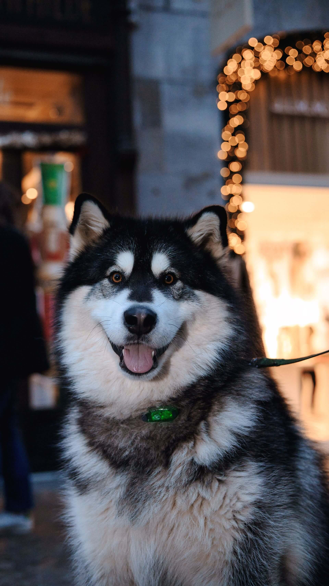
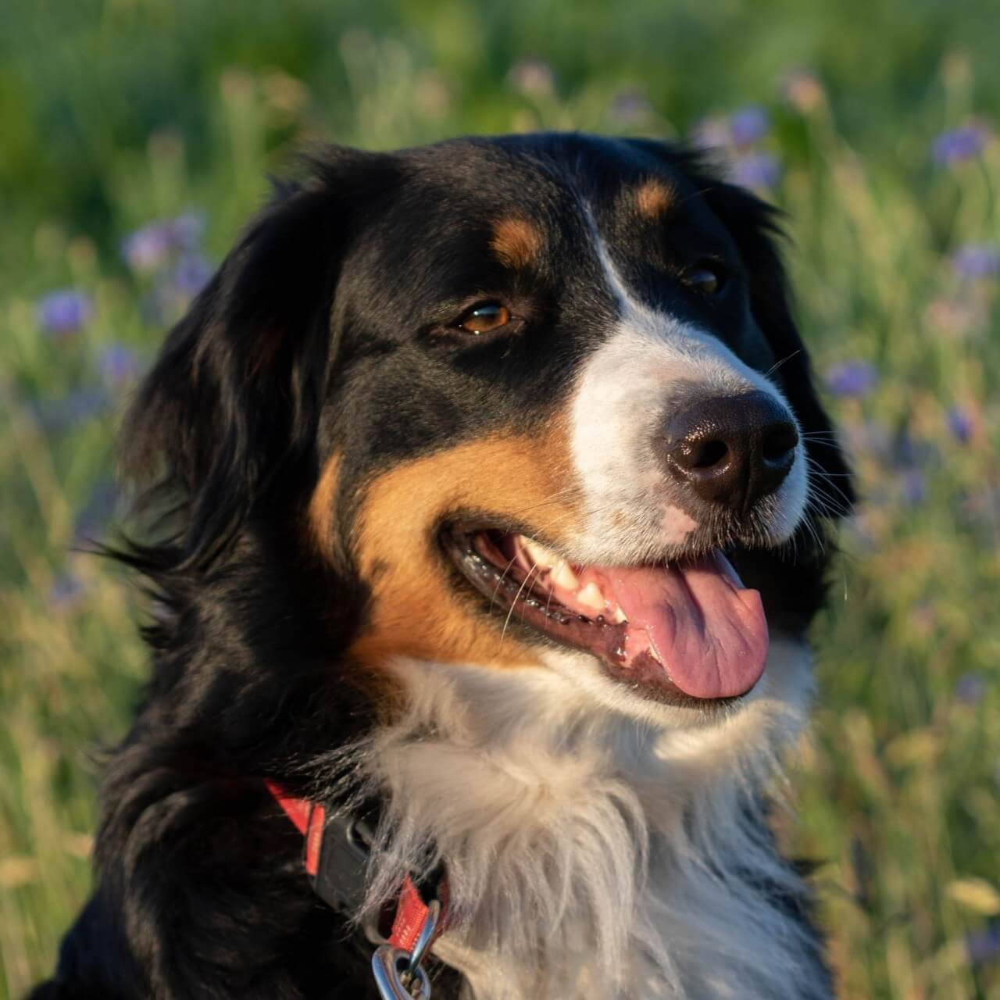
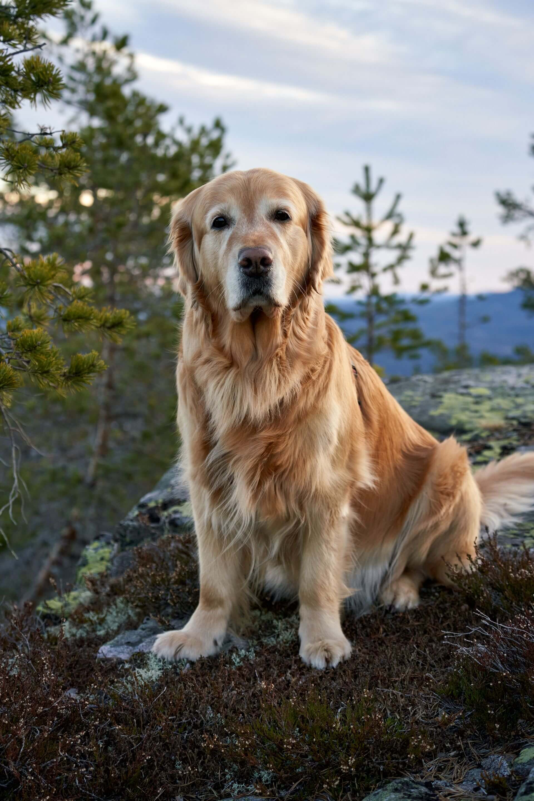
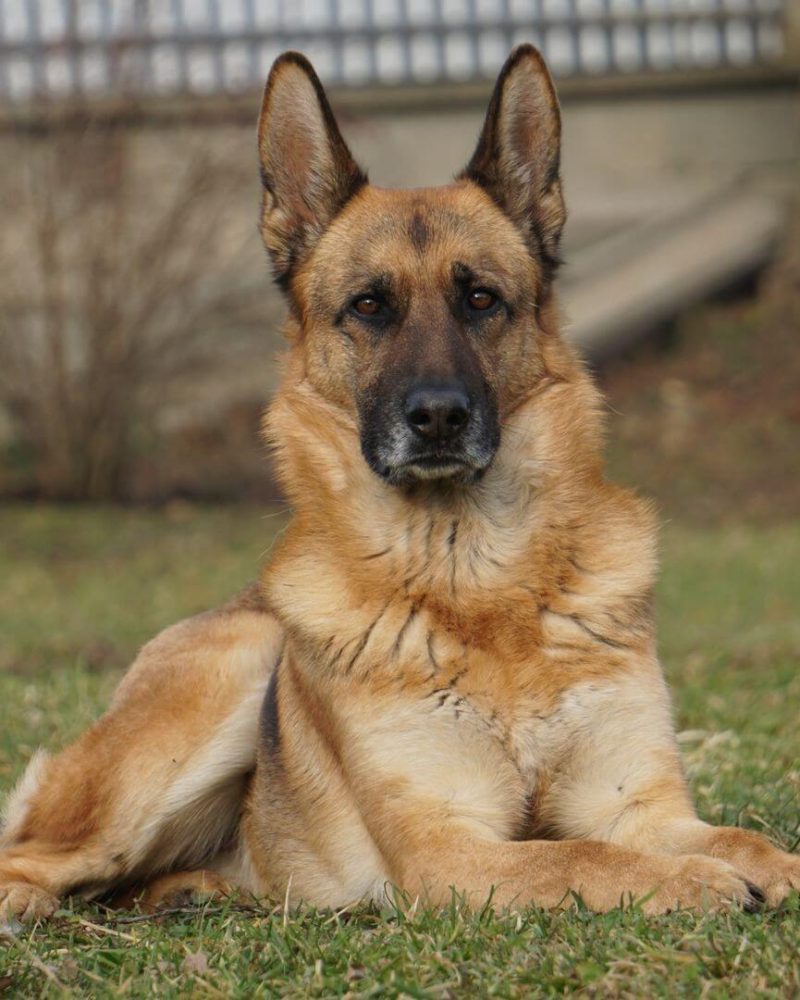
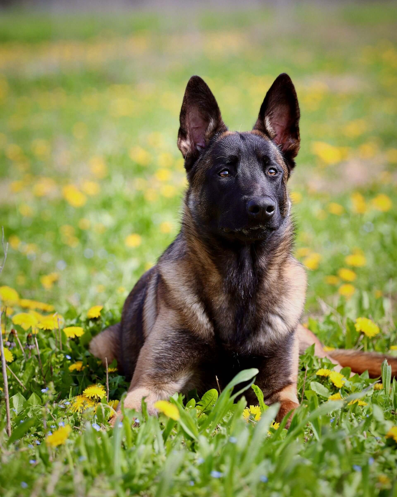

Большие породы
Подробные карточки больших пород собак: характер и повадки, особенности здоровья, окрасы и реальные фотографии. Выбирайте породу, чтобы узнать её ближе.

Сибирский хаски
Выносливый, дружелюбный, говорливый
Смотреть карточку →
Аляскинский маламут
Мощный, ласковый, упрямый
Смотреть карточку →
Бернский зенненхунд
Добрый, спокойный, семейный
Смотреть карточку →
Золотистый ретривер
Добродушный, преданный, улыбчивый
Смотреть карточку →
Немецкая овчарка
Умная, преданная, чуткая
Смотреть карточку →
Бельгийская овчарка
Умная, азартная, рабочая
Смотреть карточку →По вашему запросу пород не нашлось. Попробуйте изменить поиск.